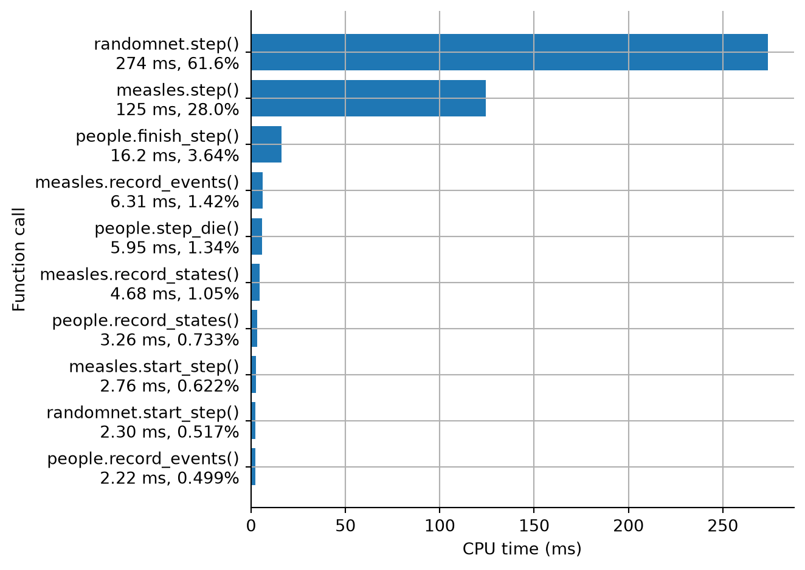

A model can go wrong in three ways: it stops with an error, it runs but gives an answer that looks wrong, or it runs too slowly. This page goes through Starsim’s tools for each, and the mistakes that commonly catch people out.
Where to look first, by symptom (the sections below cover each in turn):
Symptom
First checks
An error before the run starts
The message: it names the parameter, state, or module, and usually what to do
No epidemic
R0 in the first lines printed; where the initial infections are (init_prev seeds the first infected state, not necessarily an infectious one); a rate written where a duration was meant
An epidemic far too fast or too slow
Units of rates and durations; β per contact multiplied by a number of contacts; the time step (sim.check_dt())
The wrong population size
total_pop and n_agents; births, deaths, and migration; the number of people each agent stands for
A fit that looks wrong
Which result each data column is compared with, and over what period
Different results from run to run
The seed, the solver, changes to the model, versions of Starsim
A slow run
The number of agents, steps, and runs; then profiling
The examples on this page use the measles model from the tutorials (β = 1.9 per day, infectious for 8 days, so R0 ≈ 15):
import starsim as ssS, I, R = ss.states('S I R')infection = S >> I @1.9*I # β = 1.9 per dayrecovery = I >> R @ ss.days(8) # Infectious for 8 days on averagemeasles = ss.Disease(infection, recovery, init_prev=0.001)sim = ss.Sim(measles, total_pop=100_000, stop=ss.days(50))sim.run()
Sim: measles, 100,000 people, as an ODE, days 0 to 50
measles: R0 = 15.2, with 100 infectious at the start
Done in 0.0025 s; measles: 99,900 infections; at most 74,112 infectious, on day 6
Sim(n=100000; 0—50; diseases=measles)
Errors and what a run prints
When Starsim can’t build or run a model, it raises an error that names what is wrong in the terms of the model, and says what to do about it. Here the parameter β is misspelled:
pars= has a value for "betta", which matches no parameter. Parameters are measles.init_prev, measles.beta, measles.dur_I; did you mean measles.beta?
Most errors are Python’s own (KeyError, TypeError, ValueError); the few that code may want to catch by kind, such as ss.CapabilityError (the solver asked for can’t run part of the model), are classes of their own, listed in the appendix. Most mistakes are caught when the sim is built (sim.init(), which sim.run() calls first), so an error usually comes at once rather than after a long run.
A run prints what it is running and how, the R0 of each disease, any notes, and a closing line with the size and timing of the peak. Read these first: most surprises are explained there. A note is something Starsim assumed or noticed that is worth knowing, and doesn’t stop the run. For example, in an SEIR model, init_prev puts people in E, where a new infection starts, so nobody is infectious at first (to start people infectious, give init=dict(I=0.001) or init_n=dict(I=100)):
S, E, I, R = ss.states('S E I R')infection = S >> E @1.9*Ilatency = E >> I @ ss.days(10)recovery = I >> R @ ss.days(8)seir = ss.Disease(infection, latency, recovery, init_prev=0.001, name='measles')seir_sim = ss.Sim(seir, total_pop=100_000, stop=ss.days(100))seir_sim.run()
Sim: measles, 100,000 people, as an ODE, days 0 to 100
measles: R0 = 15.2, with 0 infectious at the start
Note: init_prev seeds E of "measles", where a new infection starts, so nobody is infectious at the start; to seed infectious people, use init=dict(I=...) (a fraction) or init_n= (a number)
Done in 0.0034 s; measles: 99,900 infections; at most 29,177 infectious, on day 33
Sim(n=100000; 0—100; diseases=measles)
The notes are kept in sim.notes, even when nothing is printed (verbose=0):
seir_sim.notes
["unit='day' (from the typed values in the model)",
'init_prev seeds E of "measles", where a new infection starts, so nobody is infectious at the start; to seed infectious people, use init=dict(I=...) (a fraction) or init_n= (a number)']
Some messages are warnings rather than notes: the run continues, but something probably needs attention (for example, a fitted parameter that ended at one of its bounds). To stop at the first warning instead, so that a script can’t carry on past one unnoticed, turn warnings into errors:
ss.options(warnings='error')
Checking the model
Starsim fills in whatever a model leaves out: the population size, the distribution of each duration, how people mix, the unit of time, and which solver to use. describe() lists the whole model as it was built, with each value that Starsim chose itself marked as guessed. If a result looks wrong, check here that the model is the one you meant:
sim.describe()
Sim 1 module, 100,000 people, days 0 to 50
solver
ode
guessed: every part of the model has a compartmental form
unit
day
from the typed values in the model
Disease 'measles' 3 states, 2 transitions
states
S, I, R
I infectious
init: init_prev = 0.001; the rest in S
infection
S -> I transmission, from I
beta = 1.9 per day
rate = 1.9 × I.n / N
homogeneous mixing
recovery
I -> R spontaneous
time in I ~ exponential(mean = 8 days)
guessed: scalar duration
Mixing and interventions
mixing
homogeneous, 1 contact per day
guessed: no network given
Results and running
results
S, I, R, and one flow per transition; also infected, prevalence
plan
measles: as compiled code, the whole run in one call
schedule
every day: measles
Notes
note
unit='day' (from the typed values in the model)
Per step of measles 1 day
infection
beta = 1.9 per day → 1.9 per step
recovery
rate 0.125 per day → p = 1 - exp(-0.125 × 1) = 0.1175 per step
equations() gives the same model as the equations of an ODE, which is often the quickest way to check that each rate is what you meant (for example, that a transmission is frequency-dependent, β S I / N, and not density-dependent, β S I):
measles.equations()
dS/dt = -beta * S * I / N
dI/dt = beta * S * I / N - I / dur_I
dR/dt = I / dur_I
Runs that should match but don’t
When two sims that should agree don’t, compare what each says about itself: describe() gives the text of each (a string), and a diff of the two shows only the lines where their states, transitions, parameters, and settings differ. Here a second sim has a lower β and a shorter step:
import difflibS, I, R = ss.states('S I R')infection = S >> I @1.5*Irecovery = I >> R @ ss.days(8)other = ss.Disease(infection, recovery, init_prev=0.001, name='measles')other_sim = ss.Sim(other, total_pop=100_000, stop=ss.days(50), dt=ss.days(0.5), verbose=0)before = sim.describe().splitlines()after = other_sim.describe().splitlines()print('\n'.join(difflib.unified_diff(before, after, 'sim', 'other_sim', lineterm='', n=0)))
--- sim
+++ other_sim
@@ -11,2 +11,2 @@
- beta = 1.9 per day
- rate = 1.9 × I.n / N [homogeneous mixing]
+ beta = 1.5 per day
+ rate = 1.5 × I.n / N [homogeneous mixing]
@@ -22 +22 @@
- schedule every day: measles
+ schedule every 0.5 days: measles
@@ -27,3 +27,3 @@
-Per step of measles: 1 day
- infection beta = 1.9 per day → 1.9 per step
- recovery rate 0.125 per day → p = 1 - exp(-0.125 × 1) = 0.1175 per step
+Per step of measles: 0.5 days
+ infection beta = 1.5 per day → 0.75 per step
+ recovery rate 0.125 per day → p = 1 - exp(-0.125 × 0.5) = 0.0606 per step
The lines marked - are the first sim’s and those marked + the second’s. To compare the results of two runs, ss.debugtools.diff_sims() lists each summary result that differs, with the ratio of the two, and ss.debugtools.check_sims_match() gives True if every result matches (see debugtools):
The following values differ between the two simulations:
sim1 sim2 diff ratio change
measles_S 0.026 0.642 0.615 24.437 ↑↑↑↑
measles_I 317.166 368.459 51.294 1.162 ↑↑
measles_R 99682.808 99630.899 -51.909 0.999 ≈
measles_recovery 99720.076 99653.223 -66.853 0.999 ≈
measles_infected 317.166 368.459 51.294 1.162 ↑↑
measles_prevalence 0.156 0.158 0.001 1.009 ↑
Where two runs of what should be the same model differ only from some step on (after a change to code written as a module, say), sim.set_diagnostics() before the run records every random draw and every agent’s states at every step, in sim.diagnostics, so the step where the two runs diverge can be found. It slows the run a great deal, so use it on a small sim.
Checking the numbers
A few numbers can be checked by hand. The run prints R0, which for an SIR is β × the infectious period; if it is far from what you expected, a rate or a duration is wrong, often in its units (see Common pitfalls). Another check is to run the same model in another way, such as agents against the ODE: a large difference that doesn’t shrink with more agents points to the time step, or to something only one of them does (Solvers and backends says when to expect them to differ). For the time step, sim.check_dt() runs the model with its step and with one half as long, and shows the largest difference in each result at any time, as a fraction of the result’s largest value:
Change in each result when the timestep goes from 1 to 0.5 days (largest difference, as a fraction of the largest value):
measles.infection 64.1% (peak 5365 → 6500)
measles.recovery 55.5% (peak 1677 → 1789)
measles.prevalence 38.7% (peak 0.7844 → 0.7603)
measles.I 38.7% (peak 15688 → 15206)
measles.infected 38.7% (peak 15688 → 15206)
measles.S 34.3% (peak 19980 → 19980)
measles.R 14.2% (peak 19884 → 19909)
If the result you care about changes by more than a few percent, use a smaller step (dt=ss.days(0.5)) and check again. For a stochastic run, part of each change is chance.
Finding what changes a parameter
Interventions and connectors change parameters while the model runs. When a parameter doesn’t seem to have the value you expect, sim.what_modifies() lists everything that changes it:
These are mistakes that have caught people out. Most don’t raise an error: the model runs and gives a wrong answer, though Starsim prints a note for many of them. The commonest is a number after @, which is a rate, not a duration: I >> R @ 8 means leaving I at a rate of 8 per day (after an eighth of a day on average), not after 8 days. Starsim notes a duration shorter than the step, which is almost always this:
S, I, R = ss.states('S I R')wrong = ss.Disease(S >> I @1.9*I, I >> R @8, init_prev=0.001, name='measles') # Meant: ss.days(8)ss.Sim(wrong, total_pop=100_000, stop=ss.days(50)).run()
Sim: measles, 100,000 people, as an ODE, days 0 to 50
measles: R0 = 0.238, with 100 infectious at the start
Note: unit='day' (from start and stop)
Note: I_to_R has a mean dwell of 0.12 days, shorter than the step; a duration is written dur=, or ss.days(10)
Done in 0.0015 s; measles: 31 infections; at most 100 infectious, on day 0
Sim(n=100000; 0—50; diseases=measles)
R0 comes out at 0.24 instead of 15. Give a duration with its unit (ss.days(8)), or as dur= in ss.Transition(I, R, dur=ss.days(8)). The others, each covered in full on its own page:
A plain number is in the sim’s unit of time. If the model’s unit is days, stop=2, meant as two years, is two days. Give times with their units or as dates (Time).
A number as a time is a calendar year if the sim has a calendar. With start='2025-01-01', when=2026 is the start of 2026, whatever the unit; with start=0, it is 2026 units from 0. A time outside the sim is an error that says how it was read (Time).
A rate times a duration is not a rate. The product itself is fine: ss.peryear(0.1)*ss.days(3) is a plain number, the chance of an event over 3 days. Using it as the rate of a transition raises a TypeError that shows the product and asks for the rate itself (Time).
An ODE always takes off. With R0 above 1 it takes off from any number infected, while a real outbreak started by a few cases often dies out by chance; for the chance of an outbreak, run a stochastic solver many times (Solvers and backends).
The median of many runs can hide that some died out. When some runs die out and the rest take off, the median or mean describes neither; count the runs with an outbreak, and summarize those (Scenarios).
n_agents= runs the model as agents. To set the size of a compartmental model, use total_pop= (Running sims).
With contacts, β is per contact. Adding a network or contact matrix multiplies R0 by about the number of contacts, so scale β down to keep the same R0; the sim prints the new R0 (Mixing).
stratify() changes the disease itself. Stratifying the same disease again in another way is an error; build the disease again each time (Stratification).
Vaccines are leaky unless told otherwise.efficacy=0.9 reduces everyone’s chance of infection by 90%; leaky=False fully protects 90% instead, which for a fast disease such as measles gives far fewer infections (Products).
Data is matched to results by name. A column called reported is not compared with the result cases (Starsim notes it, and sim.fit() stops); rename it, or use ss.SimData(data, aliases=dict(cases='reported')) (Fitting a model).
Counts over a period are compared with totals over the same period. Infections are summed between data points, while the number infectious is compared at each; check which kind each column is (Fitting a model).
A method that forgot to call super(). A module written as code that overrides init_pre(), init_post(), finish_step(), and the like without calling the base class’s version leaves part of it unset; Starsim warns at the end of the run (Custom modules).
len(sim.people) still counts those who died this step. For a fraction worked out in an analyzer, use sim.people.n, the number alive.
A date between two steps never equals sim.now.if sim.now == ss.date('2025-03-01') with weekly steps does nothing; compare with >=, or give the module start=.
To look at a run partway through, sim.run(until=...) stops after the step that starts at that time, with the people and their states as they are at its end (sim.people.to_df()); a later sim.run() carries on (see Running sims).
A model run as agents, or one with modules written as code, is run one step at a time, and within each step the modules are run in a fixed order: the loop. When a sim does something it shouldn’t, or doesn’t do something it should, sim.loop is your friend. sim.loop.to_df() lists every call in it, in order, for the whole run; the first rows are the first step:
agent_sim.run()agent_sim.loop.to_df().head(13)
time
ti
func_order
label
module
func_name
cpu_time
0
0.0
0
1
sim.start_step
sim
start_step
NaN
1
0.0
0
2
measles.start_step
measles
start_step
NaN
2
0.0
0
3
people.record_states
people
record_states
NaN
3
0.0
0
4
measles.record_states
measles
record_states
NaN
4
0.0
0
5
measles.step_state
measles
step_state
NaN
5
0.0
0
6
measles.step
measles
step
NaN
6
0.0
0
7
people.step_die
people
step_die
NaN
7
0.0
0
8
people.record_events
people
record_events
NaN
8
0.0
0
9
measles.record_events
measles
record_events
NaN
9
0.0
0
10
measles.finish_step
measles
finish_step
NaN
10
0.0
0
11
people.finish_step
people
finish_step
NaN
11
0.0
0
12
sim.finish_step
sim
finish_step
NaN
12
1.0
1
0
sim.advance
sim
advance
NaN
To see what happens during a run, a function of the sim can be inserted into the loop, after (or, with before=True, before) any call in it. Here it prints the number infectious every ten days, just after the disease has taken its step:
Day 0 infectious: 46
Day 10 infectious: 13552
Day 20 infectious: 3951
Day 30 infectious: 1162
Day 40 infectious: 307
Day 50 infectious: 102
Sim(n=20000; 0—50; diseases=measles)
A function given as an analyzer (analyzers=show_infectious) does the same, but always runs last in the step; for more than a quick look, write an analyzer that keeps results of its own. A compartmental model that Starsim runs whole has no loop to look into; inserting a function makes it run one step at a time, with the same results.
sim.loop.plot() draws the loop as a diagram, which is most useful when modules have time steps of their own (demographics once a year and a disease once a week, say), to see which runs when. sim.run_one_step() takes a single step, for stepping through a run by hand in a debugger.
Profiling
Compartmental models run in well under a second, so profiling is mostly for models run as agents, especially with networks or modules written as code. Start with how long each part of each step takes: sim.profile(kind='loop') runs the sim recording the time of each call of the loop, and plots the time spent in each (sim.loop.plot_cpu() plots it again):
big = ss.Sim(measles, n_agents=50_000, networks=ss.RandomNet(n_contacts=10), stop=ss.days(50), verbose=0)big.profile(kind='loop');

To see which lines of a function take the time, follow it with sim.profile() (kind='line', the default), which runs a copy of the sim with a line-by-line profiler on the functions given:
big = ss.Sim(measles, n_agents=50_000, networks=ss.RandomNet(n_contacts=10), stop=ss.days(50), verbose=0)prof = big.profile(follow=ss.RandomNet.add_pairs, plot=False)prof.disp(maxentries=5)
Profiling 1 function(s):
<function RandomNet.add_pairs at 0x77b4643d9300>
Elapsed time: 0.722 s
——————————————————————————————————————————————————————————————
Profile of networks.RandomNet.add_pairs: 0.246455 s (34.1092%)
——————————————————————————————————————————————————————————————
Total time: 0.246455 s
File: /home/cliffk/idm/ssv4/starsim/networks.py
Function: RandomNet.add_pairs at line 1144
Line # Hits Time Per Hit % Time Line Contents
==============================================================
1144 def add_pairs(self):
1145 """ Add the new edges needed to bring each agent up to their number of contacts """
1146 51 138235.0 2710.5 0.1 p = self.pars
1147 51 86663.0 1699.3 0.0 people = self.sim.people
1148 51 19396465.0 380322.8 7.9 uids = self.eligible(p.who).uids
1149 51 278936.0 5469.3 0.1 current = len(self)
1150 51 1607825.0 31526.0 0.7 n_conn = self.same_contacts(len(uids), current)
1151 51 40596.0 796.0 0.0 if n_conn is None:
1152 if isinstance(p.n_contacts, ss.Dist):
1153 n_conn = p.n_contacts.rvs(uids)
1154 else:
1155 n_conn = np.full(len(people), p.n_contacts)
1156
1157 # See how many new edges we need
1158 orig = n_conn.sum()
1159 target = orig / 2 # Divide by 2 since bi-directional
1160 needed = target - current
1161 if needed <= 0:
1162 return
1163 n_conn = n_conn*needed/orig
1164 n_conn = p.n_contacts.randround(n_conn) # CRN-safe stochastic integer rounding
1165
1166 51 208787550.0 4.09e+06 84.7 p1, p2 = self.pair(uids, n_conn)
1167 51 118242.0 2318.5 0.0 if p.remove_self_loops:
1168 keep = p1 != p2 # One pass over the new edges; finding duplicates would need a sort of all of them
1169 p1, p2 = p1[keep], p2[keep]
1170 51 85329.0 1673.1 0.0 n = len(p1)
1171 51 7804428.0 153028.0 3.2 weight = np.ones(n, dtype=ss_float)
1172 51 7060272.0 138436.7 2.9 dur = self.edge_steps(p1)
1173
1174 51 200982.0 3940.8 0.1 p1 = p1.view(ss.uids) # No copy
1175 51 100746.0 1975.4 0.0 p2 = p2.view(ss.uids)
1176 51 45543.0 893.0 0.0 if current == 0: # Nothing to append to
1177 51 257173.0 5042.6 0.1 self.edges.p1 = p1
1178 51 135763.0 2662.0 0.1 self.edges.p2 = p2
1179 51 153123.0 3002.4 0.1 self.edges.weight = weight
1180 51 115964.0 2273.8 0.0 self.edges.dur = dur
1181 else:
1182 self.append(p1=p1, p2=p2, weight=weight, dur=dur)
1183 51 41451.0 812.8 0.0 return
——————————————————————————————————————————————————————————————
Profile of networks.RandomNet.add_pairs: 0.246455 s (34.1092%)
——————————————————————————————————————————————————————————————
Total time: 0.246455 s
File: /home/cliffk/idm/ssv4/starsim/networks.py
Function: RandomNet.add_pairs at line 1144
Line # Hits Time Per Hit % Time Line Contents
==============================================================
1144 def add_pairs(self):
1145 """ Add the new edges needed to bring each agent up to their number of contacts """
1146 51 138235.0 2710.5 0.1 p = self.pars
1147 51 86663.0 1699.3 0.0 people = self.sim.people
1148 51 19396465.0 380322.8 7.9 uids = self.eligible(p.who).uids
1149 51 278936.0 5469.3 0.1 current = len(self)
1150 51 1607825.0 31526.0 0.7 n_conn = self.same_contacts(len(uids), current)
1151 51 40596.0 796.0 0.0 if n_conn is None:
1152 if isinstance(p.n_contacts, ss.Dist):
1153 n_conn = p.n_contacts.rvs(uids)
1154 else:
1155 n_conn = np.full(len(people), p.n_contacts)
1156
1157 # See how many new edges we need
1158 orig = n_conn.sum()
1159 target = orig / 2 # Divide by 2 since bi-directional
1160 needed = target - current
1161 if needed <= 0:
1162 return
1163 n_conn = n_conn*needed/orig
1164 n_conn = p.n_contacts.randround(n_conn) # CRN-safe stochastic integer rounding
1165
1166 51 208787550.0 4.09e+06 84.7 p1, p2 = self.pair(uids, n_conn)
1167 51 118242.0 2318.5 0.0 if p.remove_self_loops:
1168 keep = p1 != p2 # One pass over the new edges; finding duplicates would need a sort of all of them
1169 p1, p2 = p1[keep], p2[keep]
1170 51 85329.0 1673.1 0.0 n = len(p1)
1171 51 7804428.0 153028.0 3.2 weight = np.ones(n, dtype=ss_float)
1172 51 7060272.0 138436.7 2.9 dur = self.edge_steps(p1)
1173
1174 51 200982.0 3940.8 0.1 p1 = p1.view(ss.uids) # No copy
1175 51 100746.0 1975.4 0.0 p2 = p2.view(ss.uids)
1176 51 45543.0 893.0 0.0 if current == 0: # Nothing to append to
1177 51 257173.0 5042.6 0.1 self.edges.p1 = p1
1178 51 135763.0 2662.0 0.1 self.edges.p2 = p2
1179 51 153123.0 3002.4 0.1 self.edges.weight = weight
1180 51 115964.0 2273.8 0.0 self.edges.dur = dur
1181 else:
1182 self.append(p1=p1, p2=p2, weight=weight, dur=dur)
1183 51 41451.0 812.8 0.0 return
sim.profile(kind='function') profiles every function the run calls, for when you don’t yet know where to look. Only functions called during the run can be followed this way; for anything else, such as building the sim, use sc.profile() from Sciris directly. When the time is in your own code, Speed and scale has the remedies. A fit runs the model thousands of times, so profile the model before fitting it.
Further reading
If none of this finds the problem, cut it down to the smallest script that shows it (a small population, a short run, one disease, no data files) and ask on the Starsim GitHub issues, with the script, what it printed, and what you expected; see How to contribute.
line_profiler: the line-by-line profiler behind sim.profile()
Python: pdb: the debugger, for stepping through a module written as code
Appendix: every diagnostic tool
The tools on this page and elsewhere, by the question each answers. “Builds” means it calls sim.init() if the sim hasn’t been built, without running it.
Tool
What it answers
Runs the sim?
The lines a run prints, and sim.notes
What Starsim assumed, approximated, or wants checked
Notes are made as the sim is built and run
sim.describe()
The model as built: every state, transition, parameter, and setting, with each guess marked
Builds
disease.equations()
The model as the equations of an ODE
No
disease.diagram()
The states and transitions, drawn
No
sim.solver, sim.solver_reason
Which solver was chosen, and why
Builds
sim.describe(), require_kernels=True
Why a compartmental run is taken a step at a time rather than in one call (see Speed and scale)
Every random draw and agent state at every step, to find where two runs diverge
Records during the next run
ss.options(warnings='error')
Stops at the first warning
No
sim.run(until=...), sim.people.to_df()
The people and their states partway through a run
Runs part of the way
sim.run_one_step()
One step at a time, for a debugger
Runs one step
sim.loop.to_df(), sim.loop.plot()
Every call in every step, in order
Builds
sim.loop.insert()
Runs a function of your own at any point in the step
No (it runs with the sim)
sim.profile(kind='loop'), sim.loop.plot_cpu()
How long each call of the loop takes
Runs
sim.profile(follow=...)
How long each line of the functions given takes
Runs a copy
sim.profile(kind='function')
How long every function the run calls takes
Runs
sim.elapsed
The seconds the last run took
No
STARSIM_CHECK_COUNTS=1 (environment variable)
Checks, at every step, the counts the agent engine keeps against a new count (for testing the engine)
Applies to every run as agents
Appendix: errors and warnings
Most errors are Python’s own (KeyError, TypeError, ValueError); these are the ones that are classes of their own, in starsim/internals/errors.py, so that code can catch or filter them by kind (see Model execution for the policy behind them):
import inspectimport pandas as pdpd.set_option('display.max_colwidth', None) # Show each entry in fullrows = []for name, cls in inspect.getmembers(ss.errors, inspect.isclass):ifissubclass(cls, (Exception, Warning)) and cls.__module__ == ss.errors.__name__: rows.append(dict(name= ('ss.'if name in ss.errors.__all__else'ss.errors.') + name,kind='warning'ifissubclass(cls, Warning) else'error',subclass_of=', '.join(base.__name__for base in cls.__bases__),what=' '.join(inspect.getdoc(cls).split()), ))pd.DataFrame(rows).set_index('name')
kind
subclass_of
what
name
ss.AlreadyRunError
error
RuntimeError
A sim that has already run (or been finalized) is stepped, finalized, or added to again; `sim.run()` runs it again from the start
ss.errors.AtBound
warning
RuntimeWarning
A best-fit value is at or near one of its bounds
ss.errors.BooleanOperationError
error
NotImplementedError
A logical operation (and, or, xor, not) is applied to an array of people's values that is not Boolean, e.g. `ppl.age & ppl.female`
ss.CapabilityError
error
ValueError
The requested solver cannot run part of the model. Three cases: there is no sensible approximation (contact tracing, transmission trees, agent-only custom code); a function or condition asked for something that exists only per agent in a compartmental run; or an approximation would be needed and `approximations="error"`. Names the part, what it asked for, and what would fix it
ss.errors.DistNotInitializedError
error
RuntimeError
A distribution made with `strict=True` is sampled before it is initialized (by the sim, or with `dist.init()` or `dist.mock()`)
ss.errors.DistSeedRepeatError
error
RuntimeError
Two distributions of a sim have the same seed, or a distribution is jumped back to a state it has passed, so that it would draw the same random numbers twice
ss.errors.ImportIncomplete
warning
RuntimeWarning
An import could not translate something in the source. Lists each item by name, says what to ask an AI assistant with the `convert-model` skill to finish it, and warns again when the sim is first run
ss.errors.LossyExport
warning
RuntimeWarning
An export to another format left something out or changed it. Lists each item
ss.errors.NoAgentAttribute
error
CapabilityError, AttributeError
An attribute of people that exists only per agent, asked for in a compartmental run: also an `AttributeError`, so `hasattr()` gives False
ss.errors.NotConverged
warning
RuntimeWarning
The chains of a posterior disagree (R-hat above 1.01), or some draws diverged